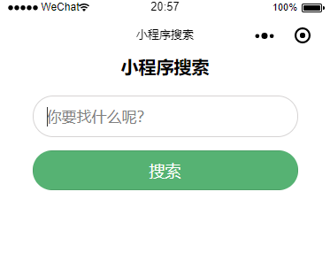

搜索功能
（A）简单版：前端+php后台
原理：
- 表单（输入框、提交按钮、提交的name值)
- 接收表单数据（js获取表单name=keyword的值）
- 通过wx.request向服务器后端发起请求查询数据库
- 返回JSON格式的数据给小程序，js解析渲染到小程序前端展示
界面

代码：
index.wxml
<!-- 标题 -->
<view class="title">小程序搜索</view>
<!-- 搜索框view -->
<view class="search_con">
<!-- 表单 -->
<form bindsubmit="formSubmit">
<!-- 记得设置name值，这样JS才能接收name=keyword的值 -->
<input type="text" name="keyword" class="search_input" placeholder='你要找什么呢？'/>
<button formType="submit" class="search_btn">搜索</button>
</form>
</view>
<!-- 搜索结果展示 -->
<view wx:for="{{re}}" wx:key="re" class="search_result">
<!-- 当提交空白表单的时候 -->
<view class="empty">{{item.empty}}</view>
<!-- 当有搜索结果的时候 -->
<view class="resname">{{item.resname}}</view>
<!-- 当查询不到结果的时候 -->
<view class="noresult">{{item.noresult}}</view>
</view>index.js
const app = getApp()
Page({
data: {},
//执行点击事件
formSubmit: function (e) {
//声明当天执行的
var that = this;
//获取表单所有name=keyword的值
var formData = e.detail.value.keyword;
//显示搜索中的提示
wx.showLoading({
title: '搜索中',
icon: 'loading'
})
//向搜索后端服务器发起请求
wx.request({
//URL
url: 'http://localhost/search.php?keyword=' + formData,
//发送的数据
data: formData,
//请求的数据时JSON格式
header: {
'Content-Type':'application/json'
},
//请求成功
success: function (res) {
//控制台打印（开发调试用）
console.log(res.data)
//把所有结果存进一个名为re的数组
that.setData({
re: res.data,
})
//搜索成功后，隐藏搜索中的提示
wx.hideLoading();
}
})
},
})index.wxss
/* 搜索样式 */
.title{
text-align: center;
font-size: 20px;
font-weight: bold;
}
.search_con{
width: 80%;
margin:20px auto;
}
.search_con .search_input{
border: 1px solid rgb(214, 211, 211);
height: 45px;
border-radius: 100px;
font-size: 17px;
padding-left: 15px;/*此处要用padding-left才可以把光标往右移动15像素，不可以用text-indent*/
color: #333;
}
.search_con .search_btn{
margin-top: 15px;
width: 100%;
height: 45px;
background: #56b273;
color: #fff;
border-radius: 100px;
}
.search_result{
width: 80%;
margin:10px auto;
}
.search_result .empty{
text-align: center;
color: #f00;
font-size: 15px;
}
.search_result .noresult{
text-align: center;
color: #666;
font-size: 15px;
}
.search_result .resname{
text-align: left;
color: #333;
font-size: 15px;
}服务器端 search.php
<?php
header('Content-Type:application/json');
//获取表单数据
$keyword1 = $_GET["keyword"];
//过滤表单空格
$keyword2 = trim($keyword1);
//当表单提交空白数据时
if(empty($keyword2)){
//构建数组
$arr = array(
"empty" => "表单不能为空"
);
//把数组转换为json
$data = json_encode($arr);
echo "[$data]";
}else{
//过滤表单特殊字符
$replace = array('!','@','#','$','%','^','&','*','(',')','_','-','+','=','{','}','[',']',';',':','"','<','>','?','/','|');
$keyword3 = str_replace($replace, '', $keyword2);
// 连接数据库
$con = mysql_connect("数据库地址","数据库账号","数据库密码");
if (!$con){die('Could not connect: ' . mysql_error());}
mysql_select_db("数据库名", $con);
mysql_query("SET NAMES UTF8");
//查询数据库
$result = mysql_query("SELECT * FROM 表名 WHERE 需要查询的字段 like '%$keyword3%' ORDER BY ID DESC");
$results = array();
//查询数据库是否存在这条记录
$exist = mysql_num_rows($result);
if ($exist) {
//遍历输出
while ($row = mysql_fetch_assoc($result)){
$results[] = $row;
}
//输出JSON
echo json_encode($results);
//当查询无结果的时候
}else{
//构建数组
$arr = array(
"noresult" => "暂无结果"
);
//把数组转换为json
$data = json_encode($arr);
echo "[$data]";
}
//断开数据库连接
mysql_close($con);
}
?>（B）复杂版：待补充
注意事项
节流处理(频繁调动api的时候需要)
// 节流
const throttle = function(fn, delay) {
let lastTime = 0
return function () {
let nowTime = Date.now()
if (nowTime - lastTime > delay || !lastTime) {
fn.apply(this, arguments)
lastTime = nowTime
}
}
}Page({
// ...
// 输入搜索关键字
input: util.throttle(function () {
let val = arguments[0].detail.value
if (val === '') {
this.setData({
suggList: []
})
this.changeSearchCls()
return false
}
api.getSuggestion({
keyword: val
})
.then((res) => {
this.setData({
suggList: res
})
this.changeSearchCls()
})
.catch((err) => {
console.error(err)
})
}, 500),
// ...
})